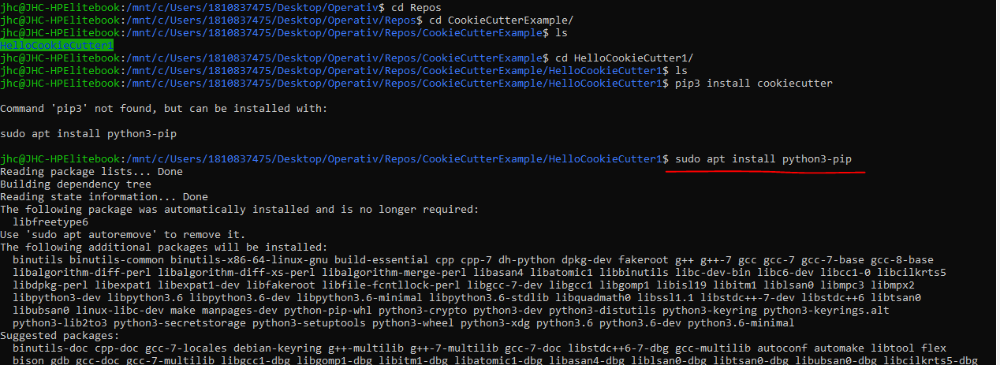
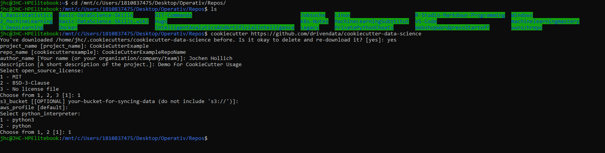

1. Linux-Basics
Für die Verwendung von Git hilft es grundlegende Befehle in Linux zu Begreifen. Checkout mein LinuxRepo. Außerdem habe ich mein eigenes Repo wie man einen Git-Server OnPrem auf einem eigenen Ubuntu-Server ausrollt.
TOC
- 1. Linux-Basics
- 2. Basics
- 3. Wiederherstlellen
- 4. Branching
- 4.1. Branching Überblick & git fetch
- 4.2. Create (Feature)Branch
- 4.3. Create Remote Branch && Connect Local Branch mit Remote Branch
- 4.4. Update Feature-Branch mit Most-Recent Master
- 4.5. Wechsel von Branches / Hotfix
- 4.5.1. Bsp Hotfix // erstellen neuer Branch
- 4.6. Branches zusammenführen // merge
- 4.7. Versionskonflikte / Merge Conflict
- 4.8. git Rebase
- 4.9. git stash
- 5. Git Konfigurationen
- 6. Git ignore
- 7. Git Tipps
- 8. Git LFS
- 9. Erweiterungen zu Git
2. Basics
2.1. Git User lokal An & Abmelden
2.2. Git - Quick and Dirty
Git - Quick and Dirty Hier wird ein als erstes ein Github User erstellt, ein erstes eigenes Projekt im Webinterface erstellt und anschließend auf den lokalen rechner geklont, eine Datei hinzugefügt, geadded, comittet und wieder zurück gepusht.
Check ob git Installiert ist
git version
- Hinterlegen von lokalen User-Credentials - Wenn kein SSH gewünscht sit
- Hinterlegen von lokalen und remote User-Credentials - mit SSH // Multiaccount-Strategie auf einer lokalen Maschine
- Hinterlegen von Remote User-Credentials / Verbindung zum Server
- Erstellen neue verzeichnis im OS & wechsel in das verzeichnis (linux mkdir / cd / usw)
- git clone
- git status
- Erstellen neue Datie im OS & wechsel in das verzeichnis (linux touch/nano/vi usw.)
- git add
- git commit
- git push
2.3. Fork fremdes Git Repo
Fork fremdes Git Repo hier wird zunächst ein bestehendes Repo von einem anderen Git-User geforkt. dieses dann in das local repo geklont und ist somit im Arbeitsbereich für die Berarbeitung bereit * git fork * git clone * git status * Datei bearbeiten
2.4. Change in git-tracked File
Change in git-tracked File grundsätzlich wird hier eine Datei geändert und diese Änderung dann in das Repo übernommen. Voraussetzung = hier muss ein Repo bereits existieren
- Änderungen der Readme Dateien
- git status => Datei wurde geändert
- git commit
- git push
2.5. Rename git-tracked File
Rename git-tracked File * git move
2.6. Remove git-tracked File
Remove git-tracked File * git ls-files => zeigt alle enthaltenen files // ähnlich wie ls * git rm * git commit * git push
3. Wiederherstlellen
3.1. lokale Histroy
lokale Histroy hier zeigen wir die lokale history und die Details zu den einzelnen Einträgen in der lokalen History * git log * git show
3.2. Wiederherstellen des Staging
Wiederherstellen aus dem lokalen Repo
hier wurde zuvor die fehlerhafte Datei noch NICHT commitet. wenn BEREITS commitet => Wiederherstellen des lokalen Repos
Wenn wir ein laufenden Commit haben & im working directory fehler einbauen. Jetz wollen wieder zu der commiten / gestagten / laufenden Version zurück gehen. //
3.3. Wiederherstellen des lokalen Repos
hier wurde zuvor die fehlerhafte Datei noch BEREITS commitet. wenn nicht commitet =>Wiederherstellen des Staging
4. Branching
4.1. Branching Überblick & git fetch
Link Fremde Änderungen von
4.2. Create (Feature)Branch
Hier wird erklärt wie man eine Branch erstellt
- git checkout -b
- Änderungen im neuen Branch
- git log
4.3. Create Remote Branch && Connect Local Branch mit Remote Branch
Hierzu gibt es kein Video im Udemy => hier die Quelle dazu
4.4. Update Feature-Branch mit Most-Recent Master
git update Branch => Create Branch hotfix & wechsel direkt hinein)
4.5. Wechsel von Branches / Hotfix
4.5.1. Bsp Hotfix // erstellen neuer Branch
- git checkout -b => Create Branch hotfix & wechsel direkt hinein
- git branch => Anzeige der möglichen Branches, hier ist jetzt hotfix dabei
- Erstellen der Änderung in dem Hotfix Branch
- git status => zeigt die Änderung die nun in dem branch hotfix gemacht wurden
- git add && * git commit im lokalen Repo
- git diff Vergleichen von unterschiedlichen Brances, zeigt die speziellen Änderungen an
4.6. Branches zusammenführen // merge
- Teseten in dem abgezweigten Branch, dass die Änderungen wie gewünscht laufen
- git checkout Wechsel von abgezweigen Branch in den Branch in den gemerget werden soll(bspw von branch Hotfix in den Branch master)
- git merge =>Commit der im hotfix gemacht wurde ist nun für den master erreichbar. Jetzt zeigt der Master einfach auf diesen Commit und der Spass ist gemerget
- git branch -d löschen von nicht mehr benötigten Branches
4.7. Versionskonflikte / Merge Conflict
- MergeConflict löschen von nicht mehr benötigten Branches
4.8. git Rebase
Wenn ich allein arbeite kann ich rebase verwenden, sobald es um ein Remote Repo geht, an dem mehrere Personen arbeiten auf jeden Fall merge nutzen.
Alternative zu git merge
- git rebase löschen von nicht mehr benötigten Branches
4.9. git stash
git Stash = Optionen Ändeurngen zu Speichern bevor man den Branch wechselt(ansonsten ist es nicht möglich den nicht commiteten Branch zu wechseln)
- [git stash]
5. Git Konfigurationen
5.1. Initilaisiere eigenes Projekt
Link Hier beginne ich ein Projekt von 0 weg. Sprich ich erstelle lokal einen Ordner und los gehts.
5.1.1. bisherige Solution
Hier erstelle ich zunächst ein Remote Repo im Webinterface, das Klone ich herunter & arbeite damit. Ergo kann ich sobald ich das lokal hab von lokalener Arbeitsbereit über staging, lokal Repo & remote Repo über den bekannten Verdächtigen (git add / commit / push / pull / Fetch / checkout usw) hin und her navigieren
5.1.2. Solution aus dem Videotutorial
Link * git init <= hier geht es lediglich bis zum lokalen Repo, nicht bis zum remote Repo Eigene Ergänzung um eine Conneciton zwischen local und remote Repo zu erstellen. * Connect Local mit Remote REPO * Connect Local mit Remote BRANCH
6. Git ignore
In der Git ignore kann ich definieren welche datein nicht in das Repo(lokal & remote) ignoriert werden sollen.
7. Git Tipps
7.1. Tags & Releases
Wenn man Stabile Versionen hat und weiterentwickelt. Nun kann es sein dass man nur mit den stabilen Versionen arbeiten mag
- git tag <= erstellen eines Tags(iwie ähnlich zu einem Commit, nur in "stable Version Commit"-Version)
- git revert & git reset, da es wie ein Commit ist kann man im Falle hiermit einfach zurückspringen.
7.2. git blame
Wenn Änderungen bestehen und man nicht weis wer das war => herausfinden wer hat welche Änderung getätigt.
7.3. Git-Hub Desktop
Link Ist gut wenn man nicht nur auf der Kommandozeile arbeiten mag, sondern auch eine GUI haben mag.
link zu github Desktop Neuer Kurs, hier ist eien GUI-Version für die Verwaltung von Git hinterlegt.
8. Git LFS
Es kann vorkommen, dass datein einfach zu groß fürs eigentliche Git-Repo sind => lösung mit Git LargeFileSystem LFS
---
9. Erweiterungen zu Git
9.1. Cookiecutter
LinkZumTutorial LinkZumTutorial_DS-Specific
Führe dieses Tutorial mit Linux aus (im Windows mit linux subsystem , halt ubuntu terminal)
Im Großen und ganzen einfach eine Policy, wie was wo in dem entstehenden Ordner abgelegt wird und warum das so ist. Cookiecutter bringt einen Downloader mitsich, mit welchem wir Cuts herunterladen und nach unsere Vorstellungen modifizeiren können....das passiert im Schritt 3
hier deploye ich zunächst lokal das Template und schließe im anschluss die Connection zu dem Remote Repo
- Install Cookiecutter > pip install cookiecutter oder > sudo apt install cookiecutter <= prefered Way of deployment 
- navigate in den Folder wo cookiecutter hineindeployed werden soll
- Führe folgenden Befehl aus: >cookiecutter https://github.com/drivendata/cookiecutter-data-science
- Folge den Fragen fürs Deplyoment 
- navigiere in den Folder Hinein
- Jetzt ist noch kein remote Repo mit dem bisher erstellten verbunden => kein .git folder hitnerlegt
- Die Folder structure im Tutorial anschauen & die Bedeutung der Ordner hinterlegen.